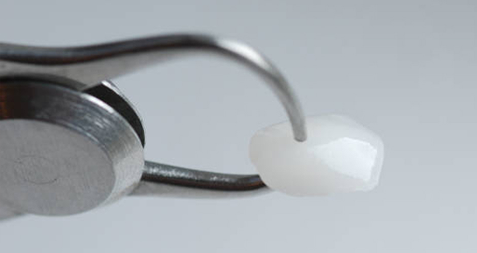
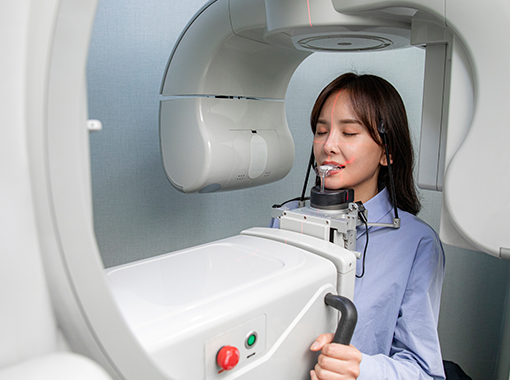
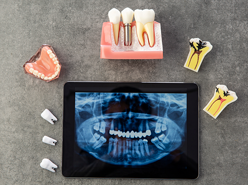
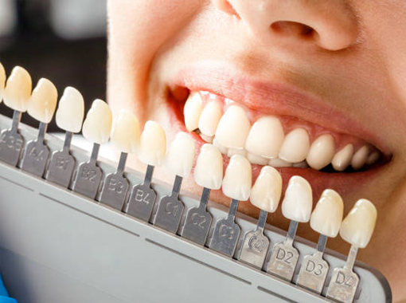
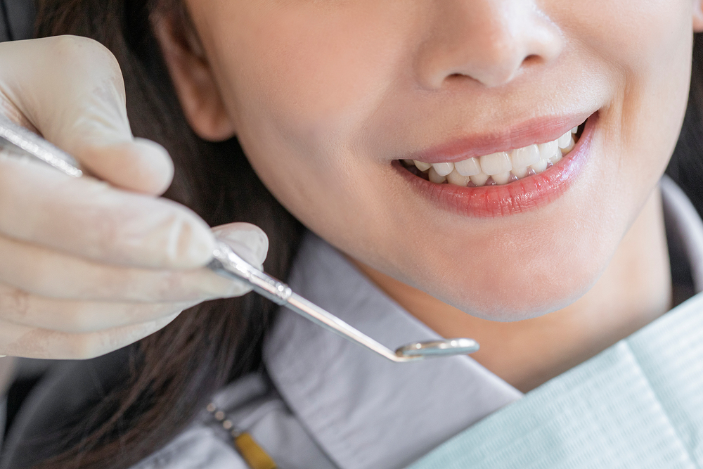
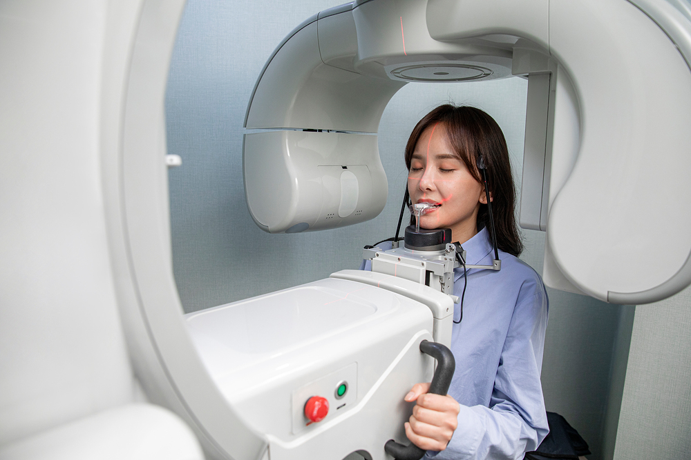
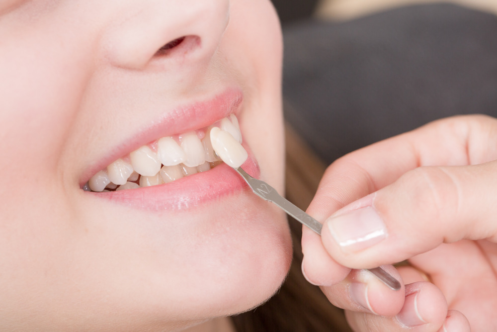
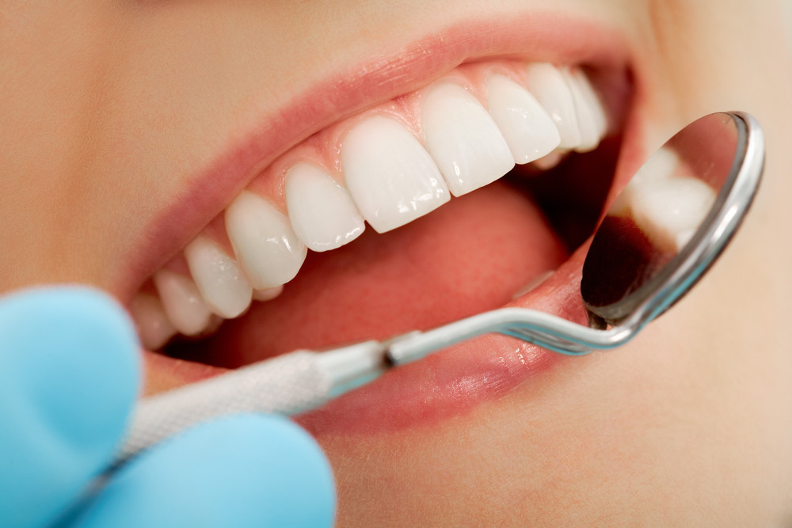

분석과 제안
얼굴 사진을 이용해
필요한 미적 요소와
조화로운 미소를 분석합니다
치아 삭제 없이 예쁜 앞니를 안전하게 만들어 드립니다
ZERO DENTAL CLINIC
내 자연치아를 그대로 지키는 가장 안전한 선택!
라미네이트는 치아의 겉면을 다듬어 삭제한 후 인조 손톱 같은 도자기로 된
얇은 보철물을 치아 겉면에 붙여서 모양을 만들어주는 시술입니다.
반면에 무삭제 라미네이트(제로레이어)는 기존 라미네이트보다 얇게,
약 0.1mm 정도로 만들어져 치아 표면 삭제 없이도 시술이 가능한
안전하고 보존적인 치료방법입니다.

| 일반 라미네이트 | 구분 | 무삭제 라미네이트 |
|---|---|---|
| 최소삭제, 미세삭제 | 삭제량 | 전혀 없음 |
| 보철 디자인에 맞게 치아를 삭제하여 완성 |
특징 | 자연치아를 최대한 보존하면서 이상적인 치아로 완성 |
| 자연치아를 삭제하여 치아가 시리고 아플 수 있음 |
부작용 | 치아 삭제가 없으므로 시리거나 아프지 않음 |
| 미백, 배열, 각도 개선 등 예쁜 컬러와 모양에 맞는 치아가 완성됨 |
효과 | 자연 치아는 지키면서 미백, 배열, 각도 개선 등 예쁜 치아가 완성됨 |
| 치아 삭제로 자연치아 손실 |
복구 가능 여부 | 기존 치아를 삭제하지 않으므로 추후 원래 상태로 복구 가능 |
3D 안면 스캐너를 활용하여 치료 후의 내 모습을 미리 확인할 수 있습니다. 내 얼굴형과 비율, 치아라인을 고려한 맞춤형 디자인이 가능합니다.

자연 치아를 보존하고 치아를 전혀 삭제하지 않는 것이 무삭제 라미네이트입니다. 치아를 삭제하지 않으므로 시리거나 아픈 부작용이 없습니다.

자연치는 다양한 색으로 이루어져 있어, 단계별 컬러감과 빛 투과율이 중요합니다. 색상, 모양, 치아결까지 원래의 내 것 같은 자연스러운 형태로 완성됩니다.


얼굴 사진을 이용해
필요한 미적 요소와
조화로운 미소를 분석합니다

시술할 부위를
최대한 정밀하게
빠짐없이 스캔합니다

극도로 얇으면서도 오랜 기간
사용가능한 올세라믹 재질로
개인별 맞춤 제작됩니다

맞춤 제작된 제로레이어를
치아 표면에 정밀하게 부착하여
자연스러운 미소를 완성합니다
치아를 삭제하지 않기 때문에 신경손상이나 시림 현상이 없고 자연치아를 보존할 수 있다는 것이
가장 큰 장점입니다. 비교적 짧은 시간에 시술이 가능하며 장치부착이 없어
이물감이나 통증이 거의 느껴지지 않는 장점도 가지고 있습니다.
치아를 삭제하지
않아 내 치아를
그대로 보존
신경손상이나
시림 현상이
없음
비교적 짧은
시간에 시술이
가능함
장치부착이 없어
이물감과 통증이
거의 없음
치아가 마모되거나
파절된 경우
앞니에 얼룩이나
변색이 된 경우
앞니 사이에
공간이 있는 경우
왜소치가
있는 경우
깨끗하고 하얀
치아를 원하는 경우
치아의 모양과
크기가 다른 경우